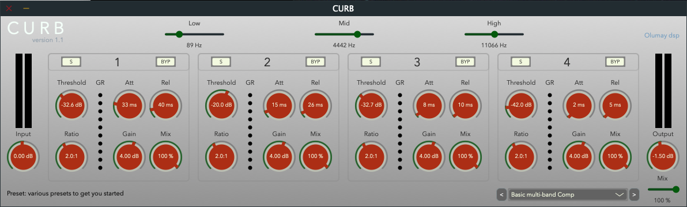
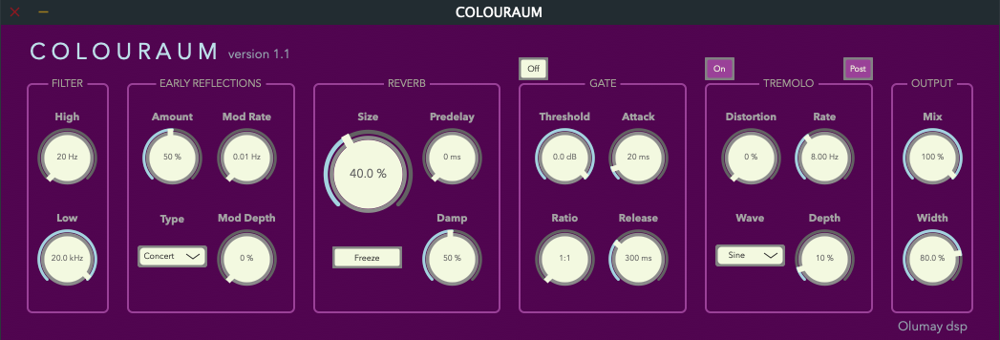
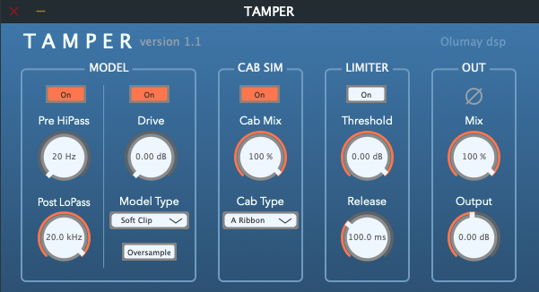
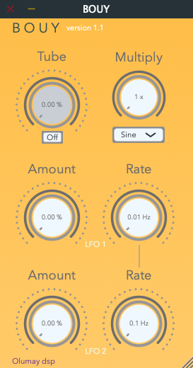
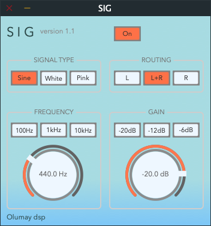
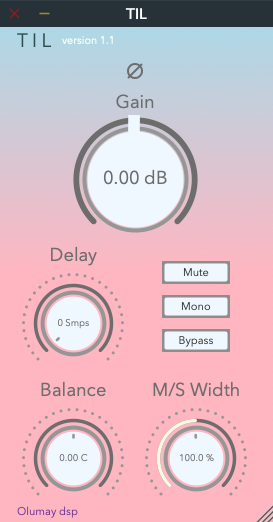

A multiband dynamics vst3 plugin made with JUCE.
Can be used to scuplt frequency and dynamic responses of instruments,
offering solutions to creative and corrective mixing scenerios.
The four bands allow for downward and upward compression.
Each band can be solo'ed (post processing) or bypassed (disables processing).
Each compressor contains threshold, ratio, attack, release, gain and mix controls.
Ratio settings above 1:1 produce downward compression, ratio settings below 1:1 produce upward compression.
Along with the main mix, each band has a mix control that adjusts the balance between the compressed and uncompressed signals.
Input and output meters display their respective stereo information, gain reduction meters display the amount of downward compression
for each band. The low, mid, and high crossover points allow you to decide what frequencies are processed in each band.
The presets contain settings for various scenarios to get you started.
All controls are fully automatable.
Tooltips for each control are shown in the bottom left corner when hovering mouse over a control.

A multi functional reverb vst3 plugin made with JUCE.
The unit outputs a variety of sounds from traditional rooms
to distorted, non-linear, other-worldly spaces.
In general, the signal flows from left to right through each stage.
The high and low pass filters shape incoming audio.
The early reflections provide 6 different types, which can be modulated in time,
and a control for the amount sent to the reverb stage.
The size, predelay and damp allow you to dial in the desired reverb,
with the freeze function creating a continuous reverberant loop.
Non-linear reverb tails can be obtained by activating the gate stage.
Movement, both pre and post reverb, can be achieved with the tremolo effect,
offering various amplitude modulation waveform types and distortion.
The output stage contains an overall mix along with a width control to adjust
the stereo image.
All controls are fully automatable.

A waveshaping and amp simulation distortion vst3 plugin made with JUCE.
The unit is capable of subtle saturation to screaming distortion.
The model stage offers high and low pass filters shape incoming audio.
Here, the model type (soft clip, hard clip, saturation, broken) is acheived through distinctive waveshaping
, with a drive amount and an option for x4 oversampling to avoid aliaising.
The cab sim stage uses convolution providing various impulse responses of well know cabinets and microphone configurations,
that can be mixed with the model stage.
The limiter offers threshold and release settings.
The out stage provides the user with a phase control to flip the polarity of the processed signal,
an overall mix, and an output control.
All controls are fully automatable.

An audio tremolo vst3 plugin made with JUCE.
The unit offers you the option to create delicate volume movement to full on ring modulation.
The tube distortion uses waveshaping to affect the signal before the tremolo.
LFO1 and LFO2 both have amount and rate controls. LFO1 modulates the incoming signal,
creating the initial tremolo effect, with a choice of waveforms (sine, triangle, square, ring).
LFO2 (sine) modulates the rate of LFO1 (frequency modulation) to offer movement in the tremolo effect,
slowing and speeding it up.
The multiply control multiplies the rate of LFO1 by whole numbers.
All controls are fully automatable.

A signal generator vst3 plugin made with JUCE.
An intuitive unit that lets you generate common signals easily.
Can be used to test and tune sound systems, for SPL measurements, sweep through entire
freqency ranges, as an aid for tuning instruments, or to quickly test left/right
wiring in studio or live room speakers.
It contains three signal types (sine, white noise, pink noise).
The sine is sweepable from 20 Hz to 21000 Hz in the frequency section, with shortcut buttons.
The gain is adjustable from -120dB to 0dB in the gain section, also with shortcut buttons.
The generated signal can be played through the left, right or both outputs via the routing section.
The On button toggles SIG on or off.
All controls are fully automatable.

An audio utility vst3 plugin made with JUCE.
TIL perfoms useful tasks by manipulating the phase, volume, stereo image and timing of an incoming signal.
The phase control inverts the polarity of a signal by 180 degrees.
Gain offers a change in volume with a range covering -66dB to +24dB.
Delay, as the name suggests, delays the signal outputted by the device after a desired number of samples.
Balance controls the stereo image, panning the signal left, right or centre.
M/S Width is a mid side control.
At 100% there is no effect. Numbers below 100% decrease the stereo width, with 0% meaning the output is mono'ed.
Numbers above 100% emphasis the sides, with 500% meaning the output only contains the information from the sides and no mid information at all.
This control is useful for separating the sides and mids of any stereo signal.